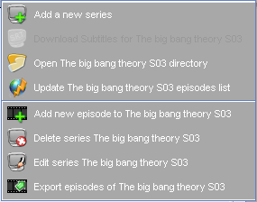
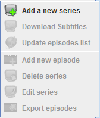

| The Series Panel PopUp Menu |
|---|
|

Enabled popup menu
|

Disabled popup menu
|
When right clicking on the series panel the series popup menu is shown.
If the clicking is on a series row the enabled popup menu is shown else the disabled one.
The following menu items are available:
- Add New Series:Brings up the [Add new Series Panel]
for adding a new series in the database.
- Open ... directory:Opens the default file browser and navigates to the local directory that contains the series episodes
(The link is provided in the [Add/Edit Series Panel]).
- Rename... Episodes:Renames the video and subtitles files according to the titles in the database.You can set the renaming
options in the [Renaming episodes Panel] or in
[Renaming options].
- Go to the subtitles page of ... :
Opens the default browser and navigates to the subtitles page for the current series.
You can choose the site from:
- TvSubtitles.net
- SubtitleOnline.com
-
Update ... Episodes list:Connects to internet and downloads episodes data of
the current selected series.
You can choose the site from:
- TvRage.com
- EpGuides.com
- Add New Episode...:Brings up the [Add new episode Panel]
for adding a new episode to the current series.
- Delete Series:Sends current series to the recycle bin (You can always restore
it at anytime from the [Recycle Bin] menu item).
- Edit Series...:Brings up the [Add/Edit Series Panel]
for editing the current series.
- Export episodes of...:Exports episodes of the current series to file for sharing
series episodes.
|